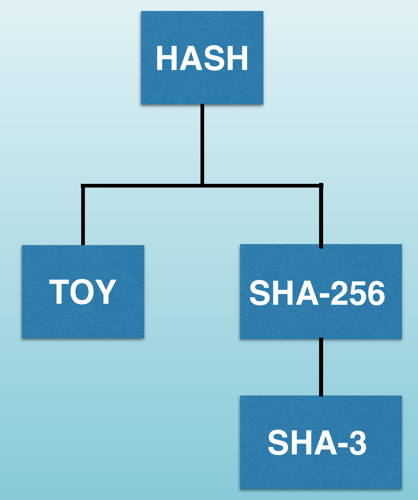
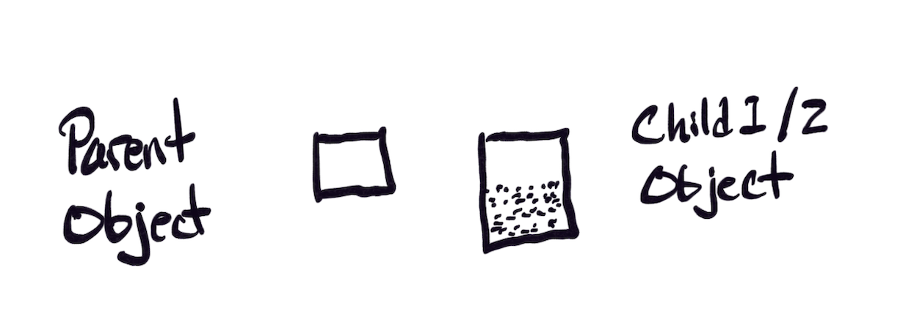
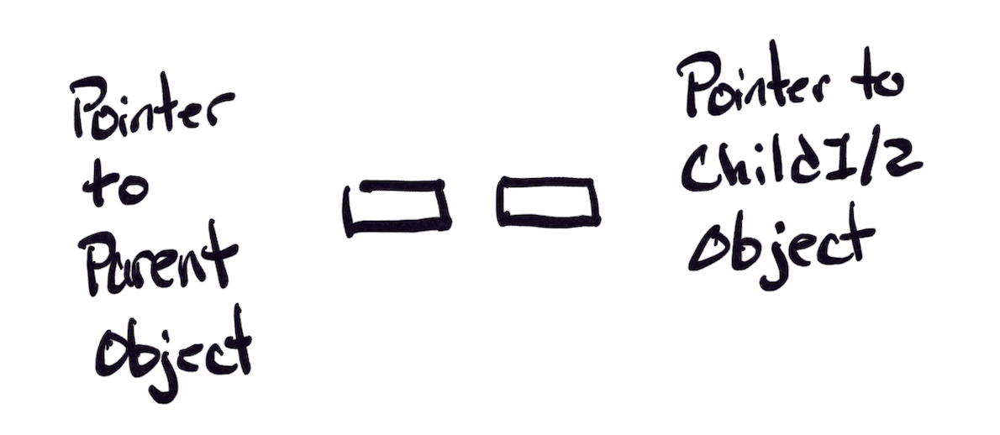

C++
enum class Discipline { ARCHEOLOGY, BIOLOGY, COMPUTER_SCIENCE, };
class Person {
protected:
string name;
public:
Person() { setName("");}
Person(const string& pName) {setName(pName);}
void setName(const string& pName) {name = pName;}
string getName() const {return name; }
};
class Student : public Person{ ... };
class Faculty : public Person{
private:
Discipline department;
public:
void setDepartment(Discipline d) {department = d; }
Discipline getDepartment() const {return department; }
};
int main(){
// Setup arrays to print enumerations
const string dName[] = {"Archelogy", "Biology", "Computer Science"};
Faculty* prof = new Faculty(); // instantiate faculty
prof->setName("Indiana Jones"); // Msg to set name
prof->setDepartment(Discipline::ARCHEOLOGY); // Msg to set department
cout << "Professor " << prof->getName()
<< " teaches in the " << "Department of ";
Discipline dept = prof->getDepartment(); // Msg to get department
cout << dName[static_cast<int>(dept)] << endl; // Print Dpt in string form
delete prof; // we called new, so we delete
return 0;
}Professor Indiana Jones
teaches in the Department
of Archelogyclass Faculty : public Person{
private:
Discipline department;
public:
Faculty(); // total waste
Faculty(const string& fname, Discipline d) : Person(fname){
department = d;
}
void setDepartment(Discipline d) {department = d; }
Discipline getDepartment() const {return department; }
};
int main(){
Faculty arrFac[] = {Faculty("Bob Smith", Discipline::BIOLOGY),
Faculty("Indiana Jones", Discipline::ARCHEOLOGY),
Faculty("Ida Lovelace", Discipline::COMPUTER_SCIENCE),
};
PrintLine(arrFac[0]);
PrintLine(arrFac[1]);
PrintLine(arrFac[2]);
return 0;
}
void PrintLine(const Faculty& fac) {
// Setup arrays to print enumerations
const string dName[] = {"Archelogy", "Biology", "Computer Science"};
cout << "Professor " << fac.getName()
<< " teaches in the " << "Department of ";
cout << dName[static_cast<int>(fac.getDepartment())] << endl;
}conversion from 'Student' to non-scalar type 'Faculty' requestedPolymorphic code produces different behavior from different data.
— Textbook, p. 955

class Hash {
protected:
string plainText;
public:
Hash(string str = "Empty") {plainText = str;
cout << endl; // prints a blank line each time a Hash is built
}
void Display(){cout << "Base text: " << plainText << endl;};
};
class Toy : public Hash {
public:
Toy(const string& s) : Hash(s){};
void Display() {
unsigned int hash = 0;
for (char c : plainText)
hash = hash * 31 + c; // Simple multiplicative hash algorithm
cout << "Toy Hash of '" << plainText << "': " << hash << endl;
}
};
class SHA256 : public Hash { ... };
class SHA3 : public SHA256 { ... };
int main() {
Hash h("Welcome");
h.Display();
Toy t("Complex text");
t.Display();
SHA256 sha("More text");
sha.Display();
SHA3 sha3("Almost done");
sha3.Display();
return 0;
}Base text: Welcome
Toy Hash of 'Complex text': 4101018301
SHA-256 Hash of 'More text': ***SHA-256***
SHA-3 Hash of 'Almost done': ***SHA-3***Toy Hash of 'Hello World': 3432422020
Toy Hash of 'Semper Fi': 1492142785
Toy Hash of 'The happiness of your life
depends upon the quality of your
thoughts.': 2918282123Base text: Hello World
Base text: Semper Fi
Base text: The happiness of your life
depends upon the quality of your
thoughts.Base text: Hello World
Base text: Semper Fi
Base text: The happiness of your life
depends upon the quality of your
thoughts.
Base text: Done!
// Parent class
class Animal {
public:
// Base class function (non-virtual)
void makeSound() const {
cout << "Animal makes a generic sound." << endl;
}
};
// Child class 1
class Dog : public Animal {
public:
// Overriding makeSound (non-polymorphic)
void makeSound() const {
cout << "Dog barks: Woof! Woof!" << endl;
}
};
// Child class 2
class Cat : public Animal {
public:
// Overriding makeSound (non-polymorphic)
void makeSound() const {
cout << "Cat meows: Meow! Meow!" << endl;
}
};
int main() {
// Create child objects
Dog dog;
Cat cat;
// Create an array of Animal objects
Animal animals[2] = {dog, cat}; // Object slicing happens here
// Call makeSound on each object in the array
for (int i = 0; i < 2; ++i) {
animals[i].makeSound(); // Calls Animal's version of makeSound
}
return 0;
}Animal makes a generic sound.
Animal makes a generic sound.
Hash* can point at a Toy, a SHA256, or a SHA3, and nothing is sliced.int main() {
Hash* myToys[4];
myToys[0] = new Hash("Hello World");
myToys[1] = new Toy("Semper Fi");
myToys[2] = new SHA256(
"The happiness of your life depends upon the quality of your thoughts.");
myToys[3] = new SHA3("Done!");
for (auto h : myToys) h->Display(); // remember to change me
return 0;
}Base text: Hello World
Base text: Semper Fi
Base text: The happiness of your life
depends upon the quality of your
thoughts.
Base text: Done!Person* pointing at ava calls Person’s print().virtual, the pointer’s type picks the function at compile time, so every element still runs the parent’s version.class Hash {
protected:
string plainText;
public:
Hash(string str = "Empty") {plainText = str;
cout << endl; // prints a blank line each time a Hash is built
}
virtual void Display(){cout << "Base text: " << plainText << endl;};
};
class Toy : public Hash {
public:
Toy(const string& s) : Hash(s){};
virtual void Display() {
unsigned int hash = 0;
for (char c : plainText)
hash = hash * 31 + c; // Simple multiplicative hash algorithm
cout << "Toy Hash of '" << plainText << "': " << hash << endl;
}
};Base text: Hello World
Toy Hash of 'Semper Fi': 1492142785
SHA-256 Hash of 'The happiness of
your life depends upon the quality
of your thoughts.': ***SHA-256***
SHA-3 Hash of 'Done!': ***SHA-3***virtual keyword.
// p15-3.cpp -- polymorphic behavior with virtual member functions
#include "inheritance5.h" // ONLY CHANGE from p15-2.cpp
#include <vector>
#include <iostream>
using namespace std;
int main()
{
vector<shared_ptr<Person>> people
{
make_shared<TFaculty>
("Indiana Jones", Discipline::ARCHEOLOGY, "Dr."),
make_shared<Student>
("Tom Cruise", Discipline::COMPUTER_SCIENCE, nullptr),
make_shared<Faculty>
("James Stock", Discipline::BIOLOGY),
make_shared<TFaculty>
("Sharon ROck", Discipline::BIOLOGY, "Professor"),
make_shared<TFaculty>
("Nicole Eweman", Discipline::ARCHEOLOGY, "Dr.")
};
for (int k = 0; k < people.size(); k++)
{
cout << people[k]->getName() << endl;
}
return 0;
}Dr. Indiana Jones
Tom Cruise
James Stock
Professor Sharon ROck
Dr. Nicole Ewemanclass Animal {
public:
// Base class function (virtual)
virtual void makeSound() const {
cout << "Animal makes a generic sound." << endl;
}
};
// Dog and Cat as before
int main() {
// Create child objects
Dog dog;
Cat cat;
// Create an array of pointers to Animal
Animal* animals[2] = {&dog, &cat}; // No slicing: pointers only
// Call makeSound on each object in the array
for (int i = 0; i < 2; ++i) {
animals[i]->makeSound(); // Calls each object's own version
}
return 0;
}Dog barks: Woof! Woof!
Cat meows: Meow! Meow!virtual in the base class turns polymorphism on: the object’s class, not the pointer’s type, picks the function at run time.virtual member function that prints a line, and two child classes that inherit publicly and override it. Use your own idea, or Instrument, Guitar, and Drum.main, create one object of each class.virtual in the base class.const exactly.->.class Instrument {
public:
virtual void play() const {
cout << "An instrument makes a sound" << endl;
}
};
class Guitar : public Instrument {
public:
void play() const {
cout << "Guitar strums: twang" << endl;
}
};
class Drum : public Instrument {
public:
void play() const {
cout << "Drum beats: boom boom" << endl;
}
};
int main() {
Instrument horn;
Guitar guitar;
Drum drum;
Instrument* band[3] = {&horn, &guitar, &drum};
for (int i = 0; i < 3; i++) {
band[i]->play();
}
return 0;
}An instrument makes a sound
Guitar strums: twang
Drum beats: boom boomMake one change at a time. Predict the result, compile and run, then put the change back before the next one.
| # | Change |
|---|---|
| 1 | Remove virtual from the base class function |
| 2 | Make the array hold objects instead of pointers, and call with . |
| 3 | Remove const from one child’s function |
| 4 | Move virtual from the base class to one child’s function |
| 5 | Remove public from one child’s class line |
| 6 | Keep the pointer array, but call with . instead of -> |
| # | Change | Result | Why |
|---|---|---|---|
| 1 | No virtual |
All three print the base line | Polymorphism is off; the pointer type picks the function |
| 2 | Array of objects | All three print the base line | Object slicing: each slot holds only the base part |
| 3 | Child loses const |
That child prints the base line | A different signature is a new function, not an override |
| 4 | virtual only in a child |
All three print the base line | virtual must be in the base class |
| 5 | No public |
Compile error: 'Instrument' is an inaccessible base of 'Guitar' |
Private inheritance hides the is-a from main |
| 6 | . instead of -> |
Compile error: request for member 'play' in 'band[i]', which is of pointer type |
band[i] is a pointer |
virtual in the base class turns it on.Hash* has its own trap.Hash constructor’s blank lines as part of a hash.t; t itself is unchanged.cpp/hash_toy_array.cpp and predict its line of output.cpp/hash_parent_array.cpp to an array of SHA256 objects holding SHA3s, and predict the output.cout << endl; from Hash’s constructor and explain the change in the output.const Hash& for function parameters that take any kind of hash.for (auto h : myToys), which copies each element, when a reference was intended.cpp/polyEx1.cpp and predict the output.sizeof(Animal) and sizeof(Dog) after giving Dog a string name; member, and explain the difference.cpp/polyEx1.cpp as an array of Animal* and predict the output.vector<shared_ptr<Base>> so the objects are deleted for you.. instead of -> on an array of pointers.new and never deleting them.virtual.cpp/hash_pointer_array.cpp with vector<shared_ptr<Hash>> and make_shared.Hash* at a stack object, Toy t("Hi");, and call Display() through it.Display() still run?myToys[1], and what does it not know?virtual in the base class when a derived class might override it.const.shared_ptr.virtual only in the child class, which does not affect calls through a base pointer.const in the child, which creates a new function instead of an override.virtual but still storing objects by value, so slicing still wins.print() virtual in 12.01’s cpp/override_print.cpp and call it through a Person* pointing at a Student.cpp/polyEx2.cpp, remove virtual but keep the pointers, then keep virtual but go back to an Animal array. Predict both outputs.cpp/polyEx2.cpp without changing Animal or the loop.virtual and a pointer or reference?CISP 400 · Fowler